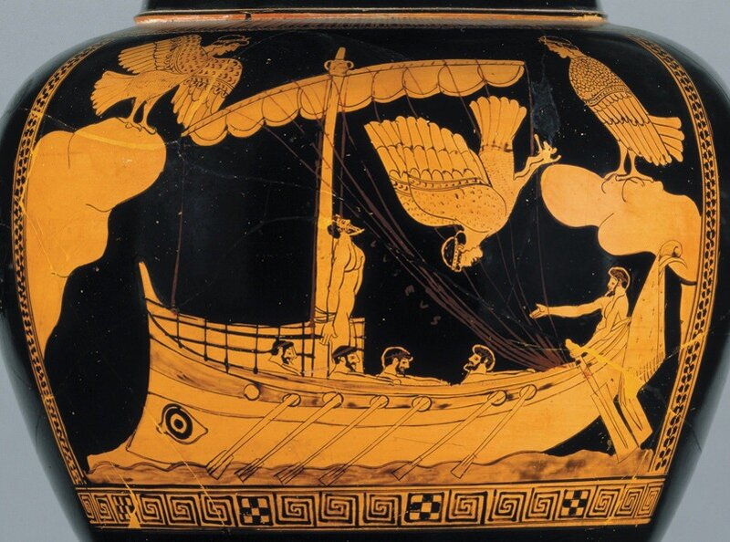
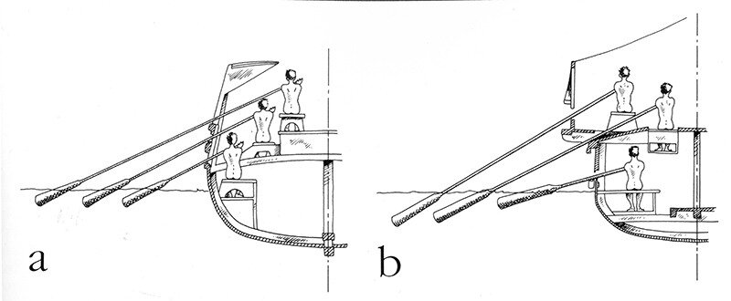
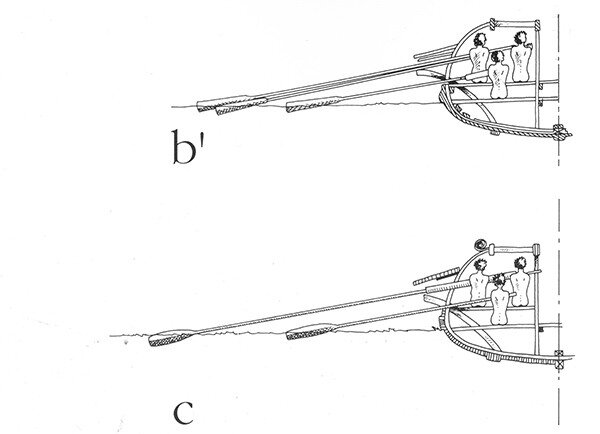

«И Шахразаду застало утро, и она прекратила дозволенные речи.
И Дуньязада сказала своей сестре Шахразаде: «Как хороши эти диковинные повести и удивительные рассказы».
И Шахразада воскликнула: «О, куда этому до того, что я расскажу вам в следующую ночь, если буду жить и царь пощадит меня!»
Тысяча и одна ночь.
Мы рассмотрели кратко историю систем гребли на галерах средних веков и эпохи Возрождения, однако все наши выводы, касающиеся ранних этапов этой истории основывались лишь на немногих изображениях и скудных описаниях, которые могут быть истолкованы различно. Приведенный нами вариант развития галеры разрабатывается Дж. Прайором и его сторонниками, но имеются и другие подходы. Чтобы попробовать глубже разобраться в этом, направимся в более отдаленные эпохи, в которые, как мы увидим, были заложены принципиальные основы систем гребли на галерах.
Даже в наши дни стиль этот мало известен и продолжает оставаться предметом горячих споров. В течение двух или трех последних веков было выдвинуто большое число различных гипотез. Однако очень часто эти гипотезы оказывались несостоятельными, так как противоречили законам механики, физиологии, сопротивления материалов и другим законам природы. Активное участие в обсуждении этих гипотез принимали участие офицеры королевского Галерного корпуса Франции, знавшие этот предмет не понаслышке. Они выдвигали вполне реалистичные модели возможных систем гребли, внося тем самым вклад в развитие представлений об этом предмете.

Мы уже отмечали, как в стремлении увеличить мощность «двигателя» гребных судов увеличивалось число гребцов вдоль каждого борта, затем гребцы стали размещаться в два яруса (биремы), один над другим, затем в три (триремы или триеры, корабли эллинистической эпохи)… Каждый новый шаг, учитывая незначительные материальные возможности того времени, требовал немалого воображения, творческого подхода в поиске новых, все более сложных, технических решений.
В размещении гребцов поярусно, один над другим, быстро наступил предел. Принципы теории корабля, пусть и неизвестные еще кораблестроителям того времени, поставили преграду на этом пути. Нельзя было бесконечно увеличивать высоту надводных частей галеры, повышая ветровую нагрузку на корпус, его парусность. Надо было искать другие способы.
Сейчас не известно, кто первый додумался создать своеобразный ящик для гребцов, выступающий за пределы бортов галеры. Эта идея в дальнейшем развилась в конструкцию постицы, апостиса. Фактически корпус как бы раздвигался вширь, но характеристики подводной части корабля при этом не менялись. Точки вращения весла отодвинулись от диаметральной плоскости. Это позволило разместить два ряда гребцов почти на одном уровне и повысило эффективность их работы. Совершился переход от расположения гребцов, показанному на рисунке a , к расположению как на рисунке b.

Вообще-то уменьшение высоты надводного борта на галере с рисунка b по сравнению с галерой a незначительно, но вариант b уже содержит в себе возможность перехода к варианту bʹ, где два верхних ряда гребцов сидят на одной банке. Этот вариант возникает естественным образом, как только появляется постица.

Всего в нескольких словах мы описали процессы, которые занимали многие века. Суммируя, можно сказать, что, во-первых, уключины весел были вынесены за плоскость борта наружу, что позволило решить казалось бы неразрешимую задачу: повысить эффективность гребли без увеличения сечения мидель-шпангоута. Во-вторых, так как схема bʹ не может функционировать при прежнем расположении банок, банки гребцов стали размещаться под косым углом к диаметральной плоскости, став подобием «рыбьего скелета», зеркально отраженного по отношению к носу галеры. Эти два нововведения были настолько органичны для обеспечения хода галеры, что сохранились на всех галерах вплоть до середины XVIII века.
Существовала и третья особенность, которая, возникнув в эпоху античности, на много пережила ее: гребцы группировались по тройкам. Эти триады гребцов оказались настолько любезны сердцу венецианцев, что они сохранили их на военных галерах даже в эпоху технического прогресса, давшего возможность размещать в группе большее число гребцов.
Конечно же древние строители галер должны были искать пути улучшения их конструкции и на других направлениях Например, существовала возможность перехода от стиля bʹ к стилю с, когда гребцы верхних ярусов гребли одним единственным, но гораздо большим веслом. Однако, если такое решение и существовало, оно не оставило никакого следа в истории.
Несмотря на то, что многие технические решения, возникшие на античных гребных кораблях, сохранились до конца эпохи галер, некоторые трудные проблемы гребли не нашли своего решения в те времена. В частности, античные строители триер не смогли отказаться от «сидячего» стиля гребли. Следовать этому стилю их обязывала необходимость бороться с ростом парусности судна. В результате, рабочий ход весла в горизонтальной плоскости был невелик, гребок оставался коротким. Даже в период расцвета галер, в начале XVIII века, он редко когда превышал 20°. Незначительная амплитуда гребка должна была быть компенсирована повышением темпа гребли. В XVII и XVIII вв. при длине весла около 12 м темп гребли составлял 20 гребков/мин., иногда даже несколько выше. На афинских триерах, где использовались более короткие весла, темп был наверняка выше. Дьявольский темп гребли позволил свободным гражданам Афин познать на себе все прелести тейлоризма намного раньше наших отцов и дедов.